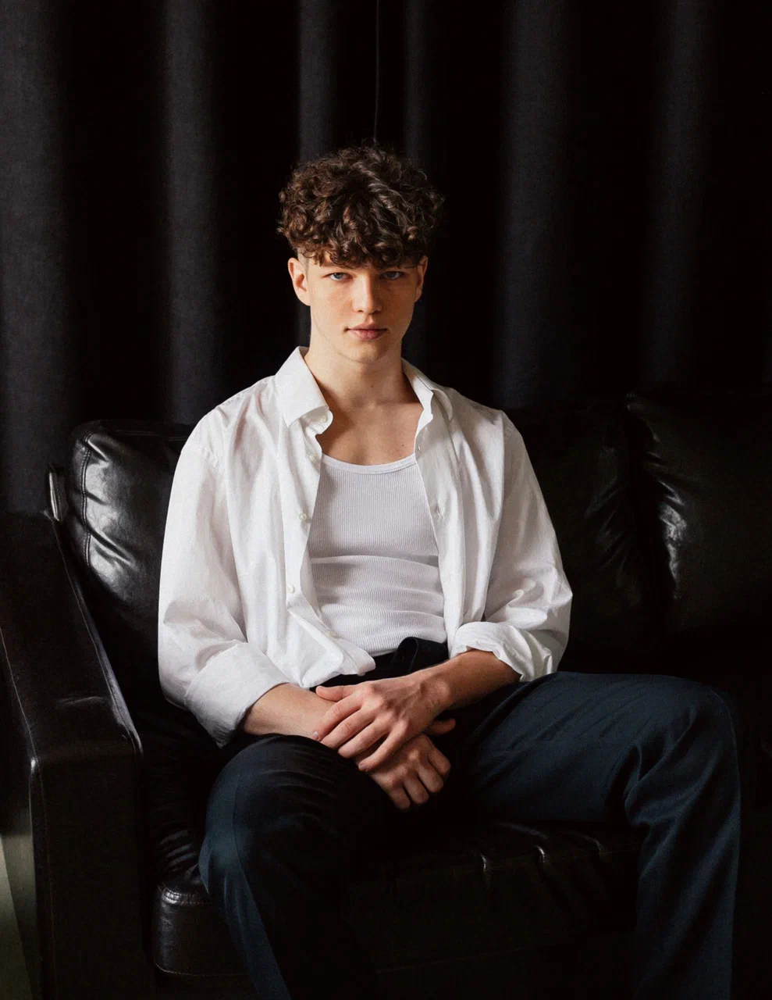

Обо мне

Меня зовут Александр Мануш, мне 23 года, и я живу в Ростовской области. Я бросил университет из-за плохого качества образования.
Помимо музыки, я увлекаюсь футболом и регулярно посещаю спортзал. Эти хобби помогают мне оставаться в хорошей физической форме и получать удовольствие от активного образа жизни.
Мои личные качества — доброта, отзывчивость, верность в дружбе и целеустремлённость. Я стараюсь быть предприимчивым и находить нестандартные решения проблем.
Моя главная цель — сделать счастливыми как можно больше людей, конечно в первую очередь близких.